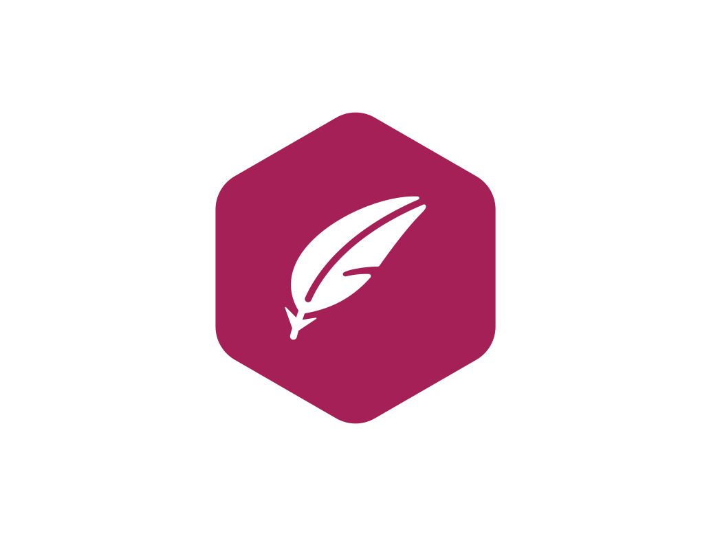
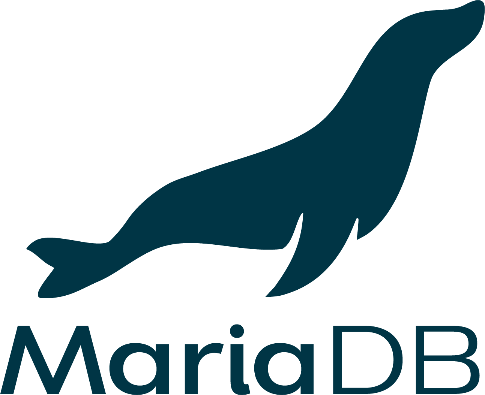

Projet GSB
Contexte
Réalisation d'un projet collaboratif consistant à mettre en place une application web complète,
avec un accent particulier sur la cybersécurité et la cohérence des choix techniques (infrastructure, services).
Installations et configurations
- Installation d’un serveur Apache2 (Debian 12)
- Installation d’un serveur VPN (OpenVPN)
- Installation d’un serveur Active Directory (Windows Server 2022)
- Installation d’un serveur DHCP, DNS, NTP, SMTP (Windows Server 2022)
- Installation d’un serveur TFTPD (Debian 12)
- Installation d’un serveur IPS (Suricata) (Debian 12)
- Installation d’un serveur GLPI (Debian 12)
- Installation d’un serveur de sauvegarde automatique (Debian 12)
- Installation d’un serveur de base de données (MariaDB sur Debian 12)
Compétences travaillées
- Conception et déploiement d’une architecture réseau sécurisée
- Administration et sécurisation des serveurs
- Gestion des accès distants et de la sécurité
- Administration et sécurisation des bases de données
- Gestion de la continuité de service et des sauvegardes
- Organisation, documentation et communication
Services utilisés






Documentation
Analyse des besoins